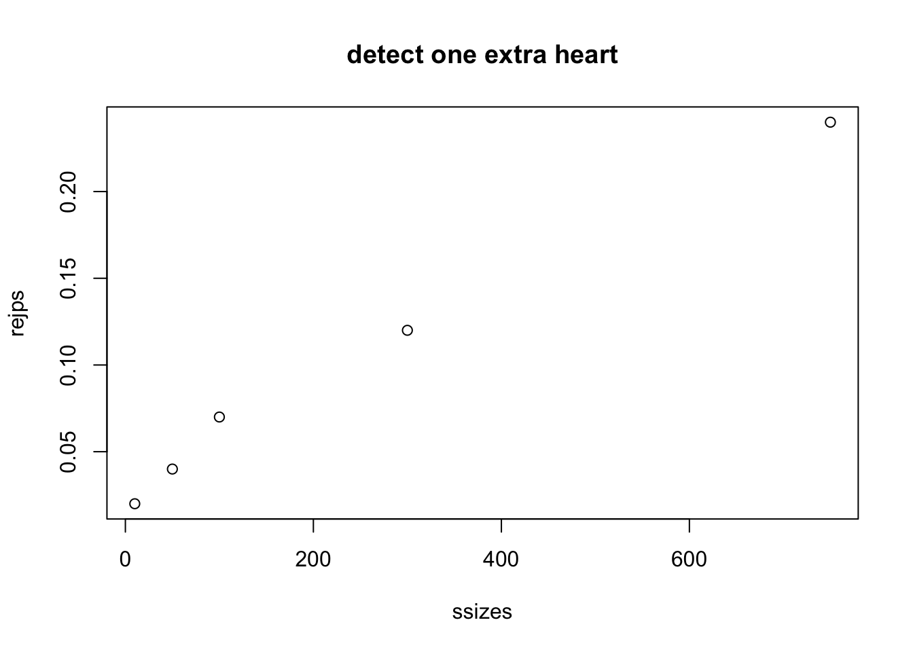
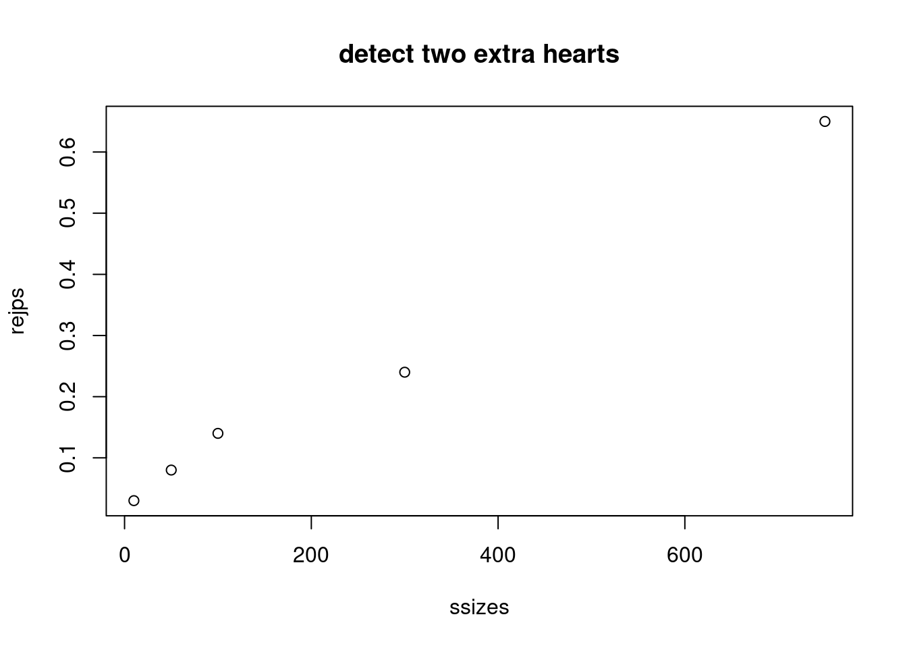
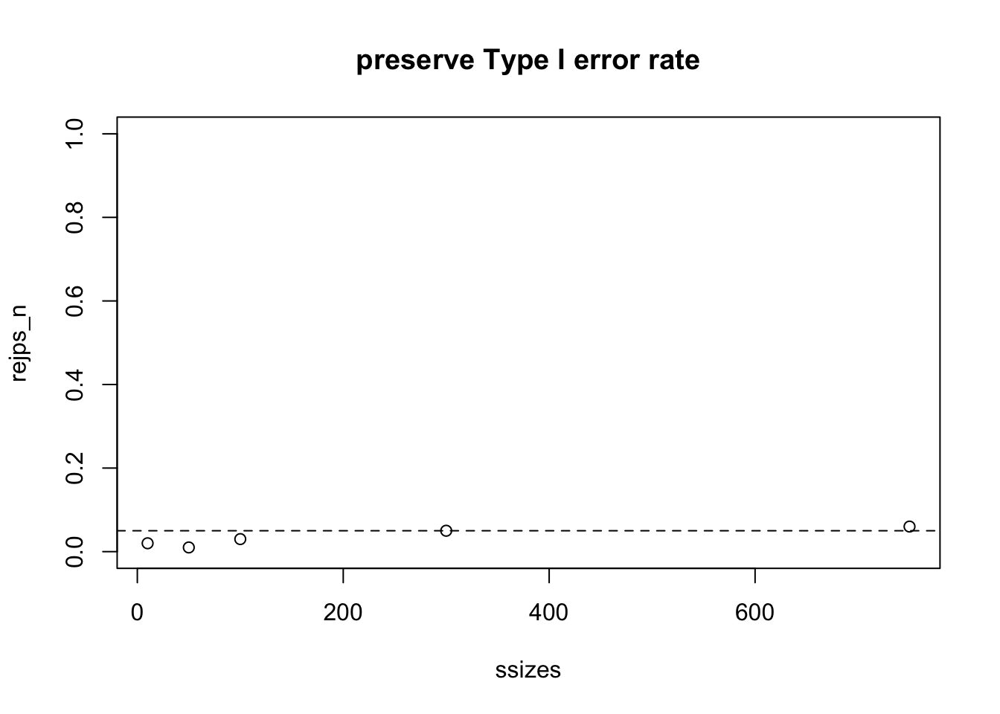

S4_inference: Definitions and exercises
Vincent J. Carey, stvjc at channing.harvard.edu
July 09, 2023
Source:vignettes/S4_hypothesis_testing.Rmd
S4_hypothesis_testing.RmdInference
Basic concepts
We are going to focus on the framework known “null hypothesis significance testing”. A “null hypothesis” is typically denoted \(H_0\) and expresses a claim that often involves a lack of effect of an experimental intervention on an outcome of interest. An “alternative hypothesis” is denoted \(H_1\), and it should express a specific measurable impact of an intervention.
In the case of our card deck from chapter S1, it would be typical to postulate
- \(H_0\): deck is fair, one card of each combination of face and suit
- \(H_1\): deck has been tampered with and has an excess of hearts
Note that in this case, \(H_1\) is fairly vague – it could be less specific, referring only to lack of fairness. \(H_1\) specifies which suit has an excess representation in the deck, but it is not specific about how severe the tampering has been.
In experimental design, it is important to have a clear view of
- sources of variation in the outcome of interest, and
- the magnitude of effect of intervention that is scientifically important.
Only when both of these are in focus can we establish the operating characteristics of our proposed experiment.
In the significance testing framework, we formalize operating characteristics as probabilities of inferential error, described below.
Before we plunge in to more formalities, let’s recall how to work with the deck of cards.
Here we create a fair deck:
##
## 10 2 3 4 5 6 7 8 9 A J K Q
## ♡ 1 1 1 1 1 1 1 1 1 1 1 1 1
## ♢ 1 1 1 1 1 1 1 1 1 1 1 1 1
## ♣ 1 1 1 1 1 1 1 1 1 1 1 1 1
## ♤ 1 1 1 1 1 1 1 1 1 1 1 1 1Now let’s create a severely biased deck:
bd = d # just a copy
bd[18] = bd[3]
bd[19] = bd[3]
bd[20] = bd[4]
bd[21] = bd[5]
table(suits(bd), faces(bd))##
## 10 2 3 4 5 6 7 8 9 A J K Q
## ♡ 1 1 1 3 2 2 1 1 1 1 1 1 1
## ♢ 1 1 1 1 1 0 0 0 0 1 1 1 1
## ♣ 1 1 1 1 1 1 1 1 1 1 1 1 1
## ♤ 1 1 1 1 1 1 1 1 1 1 1 1 1Here are our tools for shuffling and drawing the top card:
shuffle_deck = function(d) sample(d, size=length(d), replace=FALSE)
top_draw = function(d) shuffle_deck(d)[1]Let’s make a reproducible random draw:
set.seed(1234)
t1 = top_draw(bd)
t1## [1] "3 ♣"Exercise: create a vector holding 100 draws from the biased deck. Estimate the probability that the suit of the top card is diamond. Use
diamond_sign = function() "\U2662"to test the suit of each draw. For example:
t1 == diamond_sign()## [1] FALSENote: starting with set.seed(2345), the estimated probability of diamond as suit of top draw that I found was 0.16.
The fairness hypothesis
Let \(C_1\) denote the suit of the top card revealed after a fair shuffle. We can state a hypothesis about the fairness of the deck under repeated draws of top card after shuffling as
\[ H_0: Pr(C_1 = \heartsuit) = Pr(C_1 = \diamondsuit) = Pr(C_1 = \clubsuit) = Pr(C_1 = \spadesuit) = 1/4 \]
Operating characteristics: Type I and Type II errors
In a frequentist framework for statistical inference, we define procedures for testing (null) hypotheses with specified error probabilities.
A Type I error occurs when the null hypothesis is true but the test results in the assertion that it is false. Traditionally we try to keep the probability of Type I errors below 5%.
A Type II error occurs when the null hypothesis is false but the test does not result in an assertion that it is false. Traditionally we try to keep the probability of Type II errors below 20%.
Synonyms: We often use size as synonymous with Type I error probability, and power as one minus the Type II error probability
Simulating a series of experiments; parameter estimate
suppressPackageStartupMessages({
suppressMessages({
library(CSHstats)
library(EnvStats)
})
})
d = build_deck()
shuffle_deck = function(d) sample(d, size=length(d), replace=FALSE)
heart_sign = function() "\U2661"
set.seed(4141)
top_draw = function(d) shuffle_deck(d)[1]
N = 100
mydat = replicate(N, suits(top_draw(d))==heart_sign())
phat = function(dat) sum(dat)/length(dat)
phat(mydat)## [1] 0.35With 100 shuffles we have an estimate of the probability of a heart. Is our experimental result consistent with \(H_0\)?
With a larger sample size:
## [1] 0.243An improvised test
Let’s use the procedure |phat(dat)-.25|>.01 as our criterion for
rejecting
\(H_0: Pr(C_1 = \heartsuit) = 1/4\)
What is the Type I error rate
for a fair deck for the experiment based on 100 shuffles?
N = 100
NSIM = 1000
tsts = replicate(NSIM,
abs(mean(replicate(N, suits(top_draw(d))==heart_sign()))-.25)>.01)
mean(tsts)## [1] 0.911Parameterize the “delta”, which was 0.01 in the previous run. Let’s get the rejection rate estimates for two sample sizes:
prej = function(delta=.01, nullval=.25, NSIM, N) {
mean(replicate(NSIM,
abs(mean(replicate(N, suits(top_draw(d))==heart_sign()))-nullval)>delta))
}
prej(delta=.02, NSIM=1000, N=100)## [1] 0.655
prej(delta=.02, NSIM=1000, N=500)## [1] 0.323Our home-cooked test has a Type I error rate that is much too high for standard practice, and depends on the sample size.
A properly calibrated procedure
Let’s instead use the built in procedure for testing hypotheses with binomial outcomes.
The brej function defined below has two layers:
- inner: given N draws, test that the sum of the number of
hearts is consistent with a specified null value (1/4 by
default), with a specified Type I error rate (argument alpha)
- outer: replicate the inner process NSIM times to obtain
NSIM indicator variables taking value 1 if the test rejected
and 0 otherwise
We then estimate rejection probabilities by taking the means of the indicator variables for different experimental and replication setups.
brej = function(deck, nullval=.25, alpha=0.05, NSIM, N) {
replicate(NSIM, {
dat = replicate(N, suits(top_draw(deck))==heart_sign())
binom.test(sum(dat), N, nullval)$p.value < alpha
})
}
mean(brej(d,NSIM=1000, N=100))## [1] 0.054
mean(brej(d,NSIM=1000, N=500))## [1] 0.06
mean(brej(d,NSIM=1000, N=100, alpha=0.01))## [1] 0.006We have an indication here that the procedure stabilizes the Type I error rate for different designs (sample sizes) and can accommodate different significance levels.
Power curve
It is often useful to sketch the power of a test procedure over a series of values of an element of the experimental/testing setup. We’ll consider how the power to reject the null varies with the sample size, for two alternatives to the null.
We make a biased deck by switching one diamond to a heart. For such a deck, the probability of a heart is 14/52, greater than 1/4.
##
## 10 2 3 4 5 6 7 8 9 A J K Q
## ♡ 1 1 1 1 2 1 1 1 1 1 1 1 1
## ♢ 1 1 1 1 1 0 1 1 1 1 1 1 1
## ♣ 1 1 1 1 1 1 1 1 1 1 1 1 1
## ♤ 1 1 1 1 1 1 1 1 1 1 1 1 1What kind of sample size do we need to get good power to detect this exception?
ssizes = c(10,50, 100, 300,750)
rejps = sapply(ssizes, function(x) mean(brej(bd, NSIM=100, N=x)))
plot(ssizes, rejps, main="detect one extra heart")
With two switches, the probability of a heart increases to 15/52.
##
## 10 2 3 4 5 6 7 8 9 A J K Q
## ♡ 1 1 1 1 2 2 1 1 1 1 1 1 1
## ♢ 1 1 1 1 1 0 0 1 1 1 1 1 1
## ♣ 1 1 1 1 1 1 1 1 1 1 1 1 1
## ♤ 1 1 1 1 1 1 1 1 1 1 1 1 1
rejps = sapply(ssizes, function(x) mean(brej(bd, NSIM=100, N=x)))
plot(ssizes, rejps, main="detect two extra hearts")
Finally, we show that under the null hypothesis (deck is fair) the rejection rate is approximately 0.05 for a range of sample sizes.
rejps_n = sapply(ssizes, function(x) mean(brej(d, NSIM=100, N=x)))
plot(ssizes, rejps_n, main="preserve Type I error rate", ylim=c(0,1))
abline(h=0.05, lty=2)
Conclusions
Classical frequentist inference aims to control probabilities of errors of Type I (reject a null hypothesis that is true) and Type II (fail to reject a false null). The power of a test procedure is one minus its Type II error probability.
- Typically the null hypothesis specifies the value of a parameter
of a population distribution
- in the case of the card deck, the hypothesis of fairness of deck and shuffling procedure entails the probability of drawing a heart after a shuffle is 1/4
- the experimental setup entails that the probability distribution of the sum of the number of hearts drawn as top card under N shuffling events is binomial(N,1/4)
- R’s
binom.testis given- the sum of the number of hearts observed,
- the number of trials,
- the parameter value defining the null hypothesis,
- the desired type I error rate,
and produces a critical region using the binomial distribution
When the sum falls in the critical region, the null hypothesis is rejected
Verification of achievement of the desired Type I and Type II error probabilities for a testing procedure can be pursued via simulation
The power curve for a sequence of experimental conditions can be produced via simulation
Analytical tools for power computation are also available. For example, in the EnvStats package, we find
library(EnvStats)
propTestPower(750, p.or.p1=13/52, p0=.25 )## [1] 0.05
propTestPower(750, p.or.p1=14/52, p0=.25 )## [1] 0.2348789
propTestPower(750, p.or.p1=15/52, p0=.25 )## [1] 0.6742566An exercise is to reconcile these results with the simulation-based results given above.
Another is to find the sample size needed to achieve 80% power to detect a single switch from diamond to heart in an otherwise fair deck.